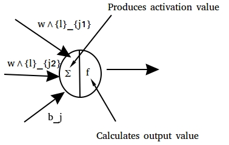

A neural network consists of a set of artificial neurons (nodes) with directed connections (edges) between them. The nodes in the network are arranged in layers, such that information flows from the lowest/input layer, layer 0, to the topmost/output layer, layer $L$. Broadly speaking, a layer can be an input, output or hidden layer, where a hidden layer is simply one that is not an input or output layer. Each layer can comprise an arbitrary number of nodes, with the caveat that the size of the input layer is often tied to the dimensionality of the data used to train the network and the size of the output layer is determined by the task the network is being used to accomplish. In a feedforward network, edges between nodes must have as their source a node in a layer $l$ and as their target a node in a layer $l'>l$, thereby preventing cycles from occurring. Further restrictions are usually applied, e.g. $l' = l + 1$. Nodes within the network can be identified individually as $n^{l}_{i}$, indicating node $i$ in layer $l$. Similarly, an edge from node $n^{l-1}_{i}$ to node $n^{l}_{j}$ can be identified as $W^{l}_{ji}$. In contrast to most graph notation, $W^{l}_{ji}$ indicates an edge going from node $i$ in layer $l-1$ to node $j$ in layer $l$. This inversion is necessary to facilitate vectorisation of the backpropagation algorithm.
Each node $n^{l}_{i}$ in the network has two values associated with it: an activation value $\mathbf{a}^{l}_{i}$ and an output value $\mathbf{h}^{l}_{i}$. The activation value is defined to be the weighted sum of a node's inputs, while the output value is computed by the node and propagated forward along edges leaving it. Along with these two values, each node $n^{l}_{i}$ in layer $l>0$ also has an associated activation or link function $f^{l}_{i}(\cdot)$ that converts the activation value to the output value. The nodes in layer 0, i.e. input nodes, operate in a marginally different manner, as they have no incoming edges and are intended to feed an input datapoint to the network. Therefore, the output value of a node in the input layer is equal to its activation value, and both are set to the value of a specific dimension in an input datapoint, i.e. node $n^{0}_{i}$ will take on the value of the $i$th dimension of input datapoints. Each node $n^{l}_{i}$ with $l>0$ is also associated with a bias parameter $\mathbf{b}^{l}_{i}$ that enables these nodes to learn an offset. Edges are also associated with values, with the edge $W^{l}_{ji}$ from node $n^{l-1}_{i}$ to node $n^{l}_{j}$ being considered a weight parameter of the network that is used to weight the output of node $n^{l-1}_{i}$ when calculating the activation of node $n^{l}_{j}$. These node activation and output valus can now be computed as: $$\mathbf{a}^{l}_{j} = \sum_{i} W^{l}_{ji} \cdot \mathbf{h}^{l-1}_{i}$$ $$\mathbf{h}^{l}_{j} = f^{l}_{j}(\mathbf{a}^{l}_{j})$$ A schematic of the structure of a neuron and its two values can be seen in the figure below.
In order to ease the propagation of information through the network, computation and notation is often vectorised. In this way the activation and output values for nodes in layer $l$ can be written as $\mathbf{a}^l$ and $\mathbf{h}^l$ respectively, with $\mathbf{a}^{l}_{i}$ and $\mathbf{h}^{l}_{i}$ still indicating the values for the $i$th node in the layer. Similarly, the weights between layers $l-1$ and $l$ can be written as a matrix $W^l$, with a row $W^{l}_{j}$ containing the weights of all edges with node $n^{l}_{j}$ as their target and a column $W^{l}_{i}$ containing the weights of all edges with node $n^{l-1}_{i}$ as their source. The values of a layer of nodes can then be computed at once as: $$\mathbf{a}^l = W^l \mathbf{h}^{l-1} + \mathbf{b}^l$$ $$\mathbf{h}^l = f^{l}(\mathbf{a}^l)$$ where $f^{l}(\mathbf{a}^l)$ is the elementwise application of $f^{l}_{j}$ to $\mathbf{a}^{l}_{j}$. In this way each successive layer of the network has its values computed until the output $\hat{\mathbf{y}} = \mathbf{h}^L$ is calculated at the final layer. Learning is carried out by iteratively updating the weight and bias parameters in order to minimise a cost $\mathcal{J}$. This is the cost of outputting $\hat{\mathbf{y}}$ when the true output is $\mathbf{y}$, and is composed of a loss function $\mathcal{L}(\hat{\mathbf{y}}, \mathbf{y})$ that penalises the distance between the ouput $\hat{\mathbf{y}}$ and the true target $\mathbf{y}$ and a regulariser $\lambda\Omega(\theta)$.
Uncited References: